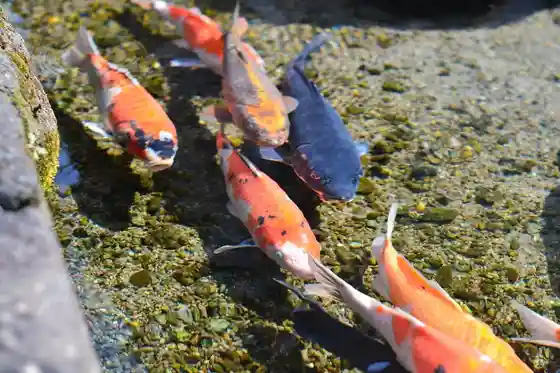
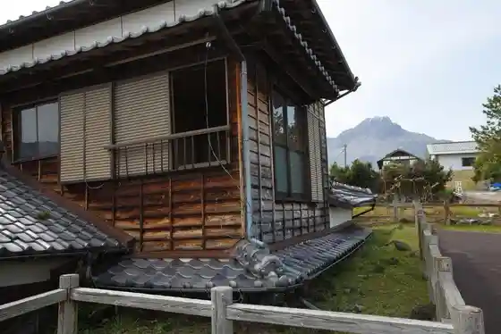
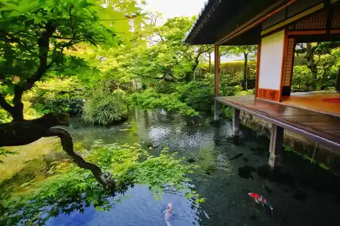
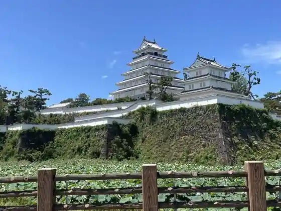

Hara Castle Ruins
Shimabara, Nagasaki · 0957-65-6333 · Official / source link
Koi no Oyogu Machi
Shimabara, Nagasaki · 0957-63-1111 · Official / source link

Dosekiryu Hisai Kaoku Hozon Park
Shimabara, Nagasaki · 0957-61-0771 · Official / source link

Yusui Garden Shimei So
Shimabara, Nagasaki · 0957-63-1121 · Official / source link

Shimabara Shiro
Shimabara, Nagasaki · 0957-62-4766 · Official / source link

Heisei Shinzan
Shimabara, Nagasaki · 0957-65-5540 · Official / source link
Ayu Kaeri Falls
Shimabara, Nagasaki · Official / source link
Ariake no Mori Furawa Park
Shimabara, Nagasaki · 0957-68-5252 · Official / source link
Kyu Onoki Ba Shogakko Hisai Kosha Sabo Mirai Kan
Shimabara, Nagasaki · 0957-72-2499 · Official / source link
Unzendake Saigai Memorial Museum (Gamadasu Domu)
Shimabara, Nagasaki · 0957-65-5555 · Official / source link
Shimabara Hi Hariyama Hana Park
Shimabara, Nagasaki · 0957-62-3986 · Official / source link
Omi Higashieki
Shimabara, Nagasaki · 0957-62-2231 · Official / source link
Roadside Station
Shimabara, Nagasaki · 0957-61-0771 · Official / source link
Buke Residence
Shimabara, Nagasaki · 0957-63-1111 · Official / source link
Shimabara Onsen Yutorogi Baths
Shimabara, Nagasaki · 0957-63-1126 · Official / source link
Sezume Saki Lighthouse
Shimabara, Nagasaki · Official / source link
Shimabara Yusui Kan (Koi Kafe Yusui Kan)
Shimabara, Nagasaki · 0957-62-8102 · Official / source link
Shirahama Beach Campground (Minami Shimabara Kuchinotsu Town)
Shimabara, Nagasaki · 0957-73-6633 · Official / source link
Hara Josei Maria Kannon Horu
Shimabara, Nagasaki · 0957-61-0977 · Official / source link
Shimabara Mayuyama Rodo
Shimabara, Nagasaki · 0957-63-1111 · Official / source link
Arima Kirishitan Isan Memorial Museum
Shimabara, Nagasaki · 0957-85-3217 · Official / source link
Minami Shimabara Himawari Hatake
Shimabara, Nagasaki · 0957-65-6333 · Official / source link
Maehama Beach
Shimabara, Nagasaki · 0957-73-6633 · Official / source link
Ryoko Iwa
Shimabara, Nagasaki · Official / source link
Harayama Shiseki Bogun (Harayama Dorumen)
Shimabara, Nagasaki · 0957-73-6633 · Official / source link
Hino Ko Castle Ruins
Shimabara, Nagasaki · Official / source link
Kuchinotsu Folk History Museum (Honkan Bunkan)
Shimabara, Nagasaki · 0957-73-6773 · Official / source link
Kuchinotsu Irukauotchingu
Shimabara, Nagasaki · 0957-86-4433 · Official / source link
Namban Fune Raiko no Chi
Shimabara, Nagasaki · 0957-65-6333 · Official / source link
Ryu Ishi Coast
Shimabara, Nagasaki · 0957-65-5540 · Official / source link
Yutorogi Ashiyu
Shimabara, Nagasaki · 0957-63-1111 · Official / source link
Fukae Suwa Shrine no Shaso
Shimabara, Nagasaki · Official / source link
Shimabara Ariake Sogo Culture Hall (Guriin'uebu)
Shimabara, Nagasaki · 0957-68-5800 · Official / source link
Minami Shimabara Irukauotchingu
Shimabara, Nagasaki · 0957-75-1515 · Official / source link
Hama no Kawa Yusui
Shimabara, Nagasaki · 0957-63-1111 · Official / source link
Eko Park Ron Tokoro Hara
Shimabara, Nagasaki · 0957-65-7056 · Official / source link
Aoi Rihatsu Kan
Shimabara, Nagasaki · 0957-64-6057 · Official / source link
Seibo Park (Seibo Memorial Museum)
Shimabara, Nagasaki · 0957-85-2922 · Official / source link
Shimabara Onsen
Shimabara, Nagasaki · 0957-62-3986 · Official / source link
Ariie Tawaraishi Tembo Tokoro
Shimabara, Nagasaki · 0957-73-6633 · Official / source link
Shimabara Minato Taminaru
Shimabara, Nagasaki · 0957-64-2234 · Official / source link
Marin Park Arie
Shimabara, Nagasaki · 0957-65-6333 · Official / source link
Shirasu (Risosamunyumu) Kengaku Tour
Shimabara, Nagasaki · 0957-85-3155 · Official / source link
Rei Oka Park
Shimabara, Nagasaki · 0957-63-1111 · Official / source link
Kogan Yama
Shimabara, Nagasaki · 0957-73-3434 · Official / source link
Maitake Fureai Rodo (Hachi Hachi Hachi Hachi Dan)
Shimabara, Nagasaki · 0957-68-5888 · Official / source link
Soku Sakana Kawa Inohara Kanamono Mise
Shimabara, Nagasaki · 0957-62-3117 · Official / source link
Ko no Sumi Falls
Shimabara, Nagasaki · 0957-65-6333 · Official / source link
Yusui Supotto (Ryo Ishi)
Shimabara, Nagasaki · 0957-63-1111 · Official / source link
Izumi Gen Koen Ashiyu
Shimabara, Nagasaki · 0957-63-1111 · Official / source link
Koi no Oyogu Machi Kanko Koryu Center (Seiryu Tei)
Shimabara, Nagasaki · 0957-64-2450 · Official / source link
Hanabusa Tembo Tokoro
Shimabara, Nagasaki · Official / source link
Kuchinotsu Minato Taminarubiru
Shimabara, Nagasaki · Official / source link
Minami Shimabara Gaido no Kai Arima no Sato
Shimabara, Nagasaki · 0957-65-6333 · Official / source link
Sakura no Meisho (Shimabara Shiro Horibata)
Shimabara, Nagasaki · 0957-62-4766 · Official / source link
Yuhi no Oka
Shimabara, Nagasaki · 0957-73-6633 · Official / source link
Bizan Chisan Kinen Park
Shimabara, Nagasaki · 0957-63-1111 · Official / source link
Fukae Maizo Bunkazai Funkasaigai Museum
Shimabara, Nagasaki · 0957-72-2512 · Official / source link
Iwato Yama Juso (Kuni Tennenkinembutsu)
Shimabara, Nagasaki · 0957-65-6333 · Official / source link
Kazusa Oto Campground
Shimabara, Nagasaki · 0957-73-6633 · Official / source link
Sembon Ki Tembo Tokoro
Shimabara, Nagasaki · Official / source link
Gonda Park
Shimabara, Nagasaki · 0957-73-6677 · Official / source link
Heisei Shinzan Neicha Center
Shimabara, Nagasaki · 0957-63-6752 · Official / source link
Megane Hashi (Minami Shimabara)
Shimabara, Nagasaki · 0957-72-3111 · Official / source link
Tengase Burial Mound
Shimabara, Nagasaki · 0957-73-6705 · Official / source link
Shinwa no Izumi
Shimabara, Nagasaki · 0957-63-1111 · Official / source link
Arie Tawaraishi Shizen Sports Park
Shimabara, Nagasaki · 0957-73-6703 · Official / source link
Ariie Sogo Sports Park
Shimabara, Nagasaki · 0957-82-1430 · Official / source link
Hayasaki Gembu Iwa
Shimabara, Nagasaki · 0957-65-5540 · Official / source link